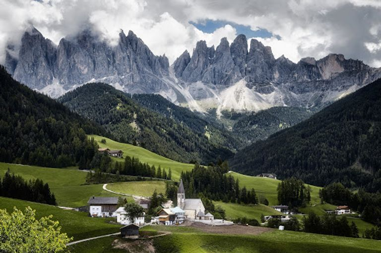

Доломітові Альпи в найбільшому гірськолижному регіоні світу Доломіти-Суперські – одна з головних природних пам'яток Італії. Велич гір, печери, густі ліси, і, звісно ж, гірськолижні курорти – все це та багато іншого приваблює сюди як самих італійців, так і закордонних гостей.
Travel24 підготував для вас цікаву інформацію про справжній скарб Італії.
Доломітові Альпи – це дивовижної краси 150-кілометровий гірський масив в Східних Альпах, що відрізняється особливою формою і матеріалами, з яких він складається. Свою назву вони отримали завдяки французькому досліднику Деоду да Долом'є, який власне і відкрив цей гірський масив.
Загалом, Доломіти – це цілий край гірськолижних курортів. Серед найвідоміших – Валь-ді-Фасса, Валь-Гардена, Чиветта, Кортина д'Ампеццо. Курорт Валь-ді-Фасса знаходиться у Кампітелло ді Фасса – містечку, з кожної вулиці якого видніються величні гірські вершини. Гірський масив Селла – серце курорту, оточене 3 долинами: Валь Гардена (Ортизеї), Альта Бадія, Валь-ді-Фасса (Канацеї). До того ж від Валь-ді-Фасса зовсім недалеко до найвищої вершини Доломітових Альп – гори Мармолада
Під час Першої світової війни це мальовниче місце перетворилося на поле бою італійської армії з австрійською, тому скелі в багатьох місцях поцятковані слідами від вибухів, а подекуди залишилися викопані під час протистояння тунелі й печери.

Площа
Доломіти займають близько 142 кілометрів, і тому тут повно-повнісінько різних обривів, скель, довгих долин та льодовиків. Найбільшим льодовиком, який розташований на найвищій горі Італійських Доломіт є Мармолада, площею 3 кілометри, висотою досягає 3342 метрів. Що цікаво, на території доломітового масиву є 18 піків, і їхня висота понад 3 тисячі метрів
Кліматичні умови
Нерідко тут відбуваються всілякі повені, зсуви й сходи лавин, а все тому, що на величезній території Доломітових Альп у надмірній кількості відбувається скупчення снігу і льоду. В історії навіть було два випадки, в 1963 і 1966 роках, коли викликані сильною бурею зсуви буквально змітали дамбу Вайонт і затоплювали нею село Лонгароне, що знаходиться під нею.
На території Доломітових Альп є декілька національних природних парків, так що це зовсім не заповідна краса – сюди може потрапити будь-хто. Мальовнича картина відкривається коли випадає перший сніг – білі контури підкреслюють до цього невидимі лінії гірської гряди.
Цікаво
Мальовничі місця Доломітів,
особливо місця у провінції Південний Тіроль, – справжні зірки кінематографа. П'янка чарівність засніжених гірських піків, порослі густими лісами долини й селища, що акуратно розмістилися між ними – неодноразово ставали знімальними майданчиками італійського, німецького й голлівудського кіно.
Ці неповторні краєвиди можна з легкістю розпізнати, переглядаючи такі відомі кінофільми, як "Еверест" (1996) із Кірою Найтлі, Робіном Райтом і Джейком Джилінхолем у головних ролях головних ролях, "Мед в голові" (2014) із Дітером Халлерворденом й Тіллем Швайгером, "Двоє у всесвіті" (2015) з Ольгою Куриленко й Джеремі Айронсом та "Найкраща пропозиція" (2013) – фільм, знятий у співпраці зі славнозвісним композитором Енніо Морріконе.
Ці неповторні краєвиди можна з легкістю розпізнати, переглядаючи такі відомі кінофільми, як "Еверест" (1996) із Кірою Найтлі, Робіном Райтом і Джейком Джилінхолем у головних ролях, "Мед в голові" (2014) із Дітером Халлерворденом й Тіллем Швайгером, "Двоє у всесвіті" (2015) з Ольгою Куриленко й Джеремі Айронсом та "Найкраща пропозиція" (2013) – фільм, знятий у співпраці зі славнозвісним композитором Енніо Морріконе.